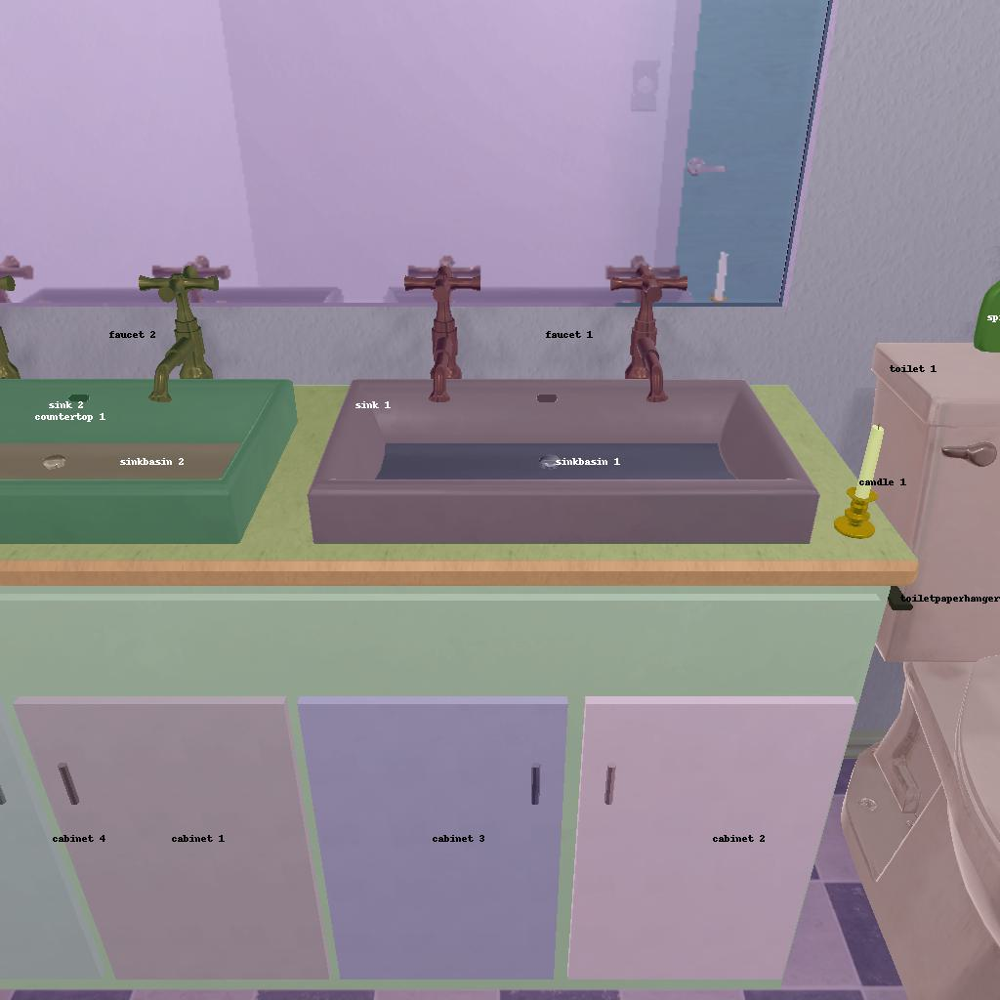

---------------------------------------------------------task: 9---------------------------------------------------------
--------------------------------------------------------------------------------------------------------------------------------------------------------------------
--------------------------------------------------------------------------------------------------------------------------------------------------------------------
Step:--------------------------------------------------------------------------3-------------------------------------------------------------------------------
----------------------------------------
VLM Prompt:
Image1:
Image2:
Image3:
**Instruction**
1. Analyze the provided image to identify all visible household objects, focusing on those relevant to the task description "put some soapbottle on toilet."
2. Use the analysis of the image and the task hint "The agent must find an object of the desired type, pick it up, find the correct location to place it, and put it down there." to answer the question: what is the most reasonable action in the choices for the task description "put some soapbottle on toilet"?
4. Decide and write the answer using the template: The answer is: (i): , where i is the real number. If there is no desired object in the image, search every place based on **Initial Observation** to find the object. And if no one is exactly correct, choose a similar answer.
**Initial Observation**
You are in the middle of a room. Looking quickly around you, you can see bathtub (1), bathtubbasin (1), toilet (1), cabinet (1-4), sink (1-2), countertop (1), sinkbasin (1-2), toiletpaperhanger (1), towelholder (1), garbagecan (1), handtowelholder (1)
**Answer Choices**
(1): go to bathtub 1
(2): go to bathtubbasin 1
(3): go to toilet 1
(4): go to cabinet 2
(5): go to cabinet 3
(6): go to sink 1
(7): go to sink 2
(8): go to countertop 1
(9): go to cabinet 4
(10): go to sinkbasin 1
(11): go to sinkbasin 2
(12): go to toiletpaperhanger 1
(13): go to towelholder 1
(14): go to garbagecan 1
(15): go to handtowelholder 1
(16): close cabinet 1
(17): take faucet 1 from cabinet 1
(18): take faucet 2 from cabinet 1
(19): take candle 1 from cabinet 1
(20): take spraybottle 1 from cabinet 1
(21): examine cabinet 1
**Answer**
Let's think step by step by following the instructions.
----------------------------------------
----------------------------------------
Original Response:
The task is to "put some soapbottle on toilet." From the initial observation, we can see that there are cabinets (1-4) where a soapbottle might be stored.
In the images provided, there is no visible soapbottle on the countertop, sinkbasins, or other surfaces.
The most reasonable action would be to search the cabinets for a soapbottle. Since we don't have a clear indication of where the soapbottle might be, we need to examine the cabinets. Among the answer choices, there is an option to examine cabinet 1 but not the other cabinets. However, since there is no direct action to take or examine a soapbottle, we will go with the action closest to searching for the soapbottle, which is examining the cabinet.
The answer is: (21): examine cabinet 1.
----------------------------------------
----------------------------------------
>>> Refine Original VLM Response and Get Pure Action: examine cabinet 1
----------------------------------------
-----------------------------------------------------------------
Running time: 9.390228271484375 seconds
Total Money: 5.061959999999999
-----------------------------------------------------------------
-----------------------------------------------------------------
Text Observation:On the cabinet 1, you see a faucet 1, a faucet 2, a candle 1, and a spraybottle 1.
-----------------------------------------------------------------
UNSUCCEED